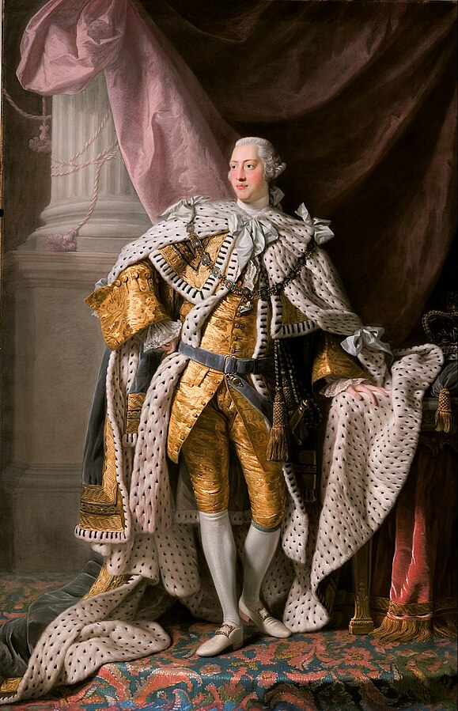
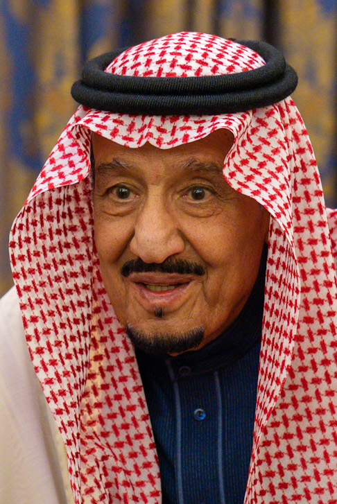

การปกครองโดยพระมหากษัตริย์หรือราชาธิปไตย (Monarchy) หมายถึง รูปแบบการเมืองที่ให้อำนาจแก่คนๆเดียว
ซึ่งทำหน้าที่เป็นประมุขและออกกฎระเบียบเพื่อควบคุมสังคม ผู้มีอำนาจดังกล่าวนี้จะสืบทอดอำนาจของตนโดยทางสายเลือด
เช่น มอบอำนาจให้บุตรชายหรือบุตรสาว เมื่อกษัตริย์หรือพระราชาสละราชสมบัติหรือสิ้นพระชนม์
พระโอรสหรือพระธิดาก็จะสืบทอดอำนาจต่อไป การปกครองโดยกษัตริย์จะมีรูปแบบและรายละเอียดต่างกันในแต่ละสังคม
ในสังคมที่ให้อำนาจเบ็ดเสร็จแก่กษัตริย์จะเรียกว่าการปกครองแบบสมบูรณาญาสิทธิราชย์ (Absolute Monarchy)
ส่วนสังคมที่ให้อำนาจกษัตริย์ตามเงื่อนไขของรัฐธรรมนูญจะเรียกว่าการปกครองแบบกษัตริย์ภายใต้รัฐธรรมนูญ
(Constitutional Monarchy) ซึ่งจะมีคณะรัฐบาลเข้ามาบริหารการปกครอง
ปัจจุบันนี้รูปแบบการปกครองแบบสมบูรณาญาสิทธิราชย์ได้เปลี่ยนไปเป็นการปกครองแบบกษัตริย์ภายใต้รัฐธรรมนูญมากขึ้น
กษัตริย์จะใช้อำนาจภายใต้ที่กฎหมายกำหนด
และหน้าที่ส่วนใหญ่จะเป็นเชิงสัญลักษณ์และสืบทอดขนบธรรมเนียมประเพณีบางอย่าง
การสืบทอดอำนาจของพระมหากษัตริย์ส่วนใหญ่มักจะสืบต่อมา จาก บรรพบุรุษโดยมักจะเป็นการสร้างราชวงศ์อย่างไรก็ตาม
ระบอบกษัตริย์ยังสามารถเลือกและสถาปนาตนเองได้อีก ด้วย
ขุนนางแม้จะไม่ได้เป็นส่วนหนึ่งของระบอบกษัตริย์โดยกำเนิด
แต่มักทำหน้าที่เป็นกลุ่มบุคคลที่เลือกพระมหากษัตริย์และเติมเต็มสถาบันที่ก่อตั้ง (เช่นรัฐสภาและราชสำนัก )
ทำให้ระบอบกษัตริย์จำนวนมาก มี องค์ประกอบแบบกลุ่มผู้ปกครอง ความชอบธรรมทางการเมืองของระบอบกษัตริย์ที่สืบทอด
เลือกตั้ง หรือประกาศใช้
มักจะขึ้นอยู่กับการอ้างสิทธิ์ในการเป็นตัวแทนของประชาชนและดินแดนผ่านความสัมพันธ์บางรูปแบบ (เช่นเครือญาติ )
และสิทธิอันศักดิ์สิทธิ์หรือ สถานะอื่นๆที่ได้มา


•ในระบอบสมบูรณาญาสิทธิราชย์พระมหากษัตริย์จะปกครองแบบเผด็จการโดยมีอำนาจเหนือรัฐและรัฐบาลอย่างเบ็ดเสร็จ เช่น สิทธิในการปกครองโดยพระราชกฤษฎีกาประกาศใช้กฎหมายและลงโทษเป็นต้น